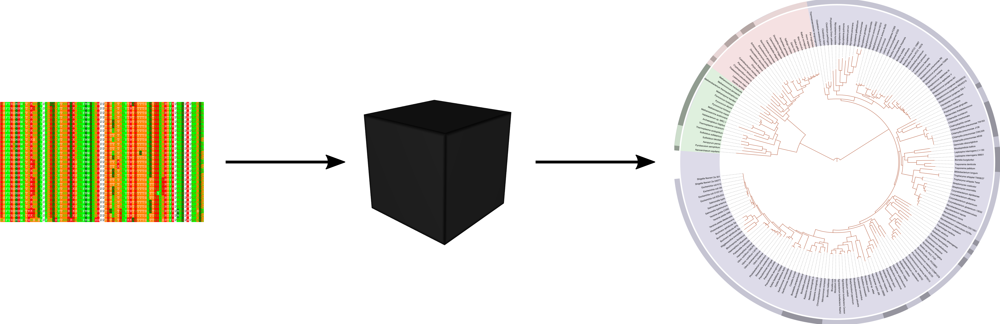
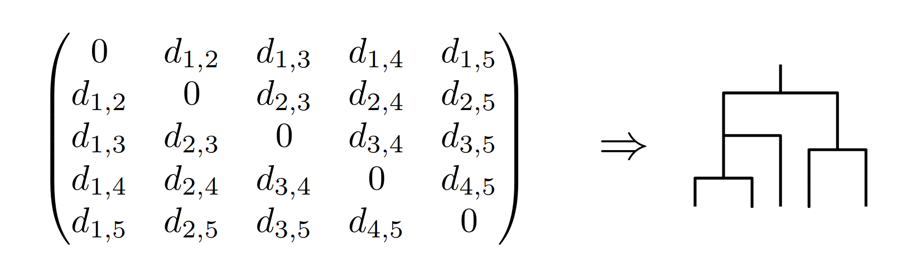
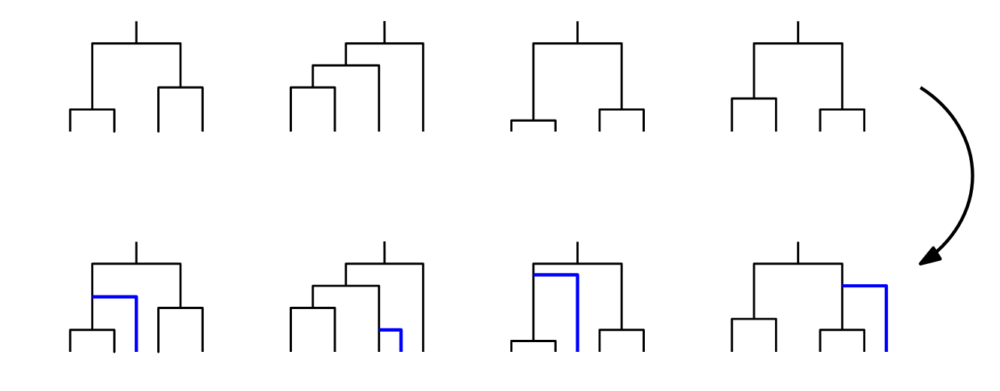
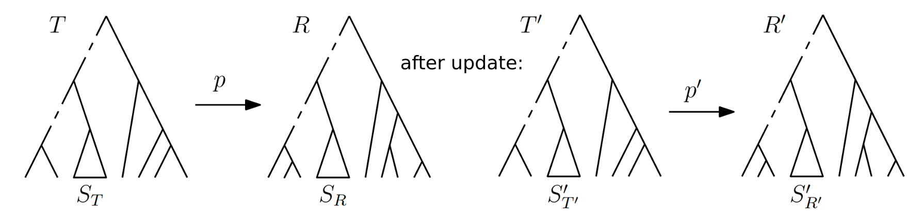

Is it hard to update trees when data change?
Online phylogenomics
Alex Gavryushkin

24 February 2020
"Static" algorithms
Data -> Algorithm -> Solution Basically equivalent to computing a function $f(x_1, \ldots, x_n) = y$
Online algorithms
Given a finite set of "requests" $R = \{r_i\}$, we want to compute a series of functions$$ r_0(), r_1(r_0), r_2(r_0, r_1),\ldots, r_{i+1}(r_0,\ldots, r_i),\ldots $$
The (worst case) complexity (denoted by $c$) of an online algorithm is then defined as (a function of $n$) $$ \frac 1 n \max_{r_i \in R}\sum_{i = 0}^{n-1} c(r_i) $$
When online algorithms make sense
It is convenient to say that a problem has an efficient online solution if its online complexity is smaller than the "static" complexity of the worst $r_i$.The central question for us in this project is what methods in computational biology have efficient online solutions.
Hint: Greedy methods are good candidates
When online algorithms are possible
Stability analysis
We say that an algorithm is (Lyapunov) stable if small perturbations to the input (data) result in small changes to the solution.It is very hard to find efficient online versions of non-stable static algorithms.
Online Phylogenetics
Tree inference methods
Distance-based methods
Model-based methods
Treespace analysis methods
Distance-based methods
Path-based methods
Your ideas?
Distance-based tree inference methods
 Neighbour-joining, UPGMA. Possible requests: add taxon, remove taxon, change distance (sequence). Stability considered with respect to the distance matrixModel-based tree inference methods
 Large space of possible requests.Computing distances and paths in treespace
 Paths are not stable in the BHV and tau-space but they could be those rare exceptions and have online versions.Open question: t-space.
Local rearrangement based distances, such as RNNI, are stable for appropriate requests. So these are our focus now.
Applications
Consensus methods: Fréchet mean (centroid) based methods are stable if paths between trees (geodesics) are.Tree proposals: (our recent algorithms) FindPath, MDistance.
Analyses of samples of trees, e.g. Rob Lanfear's proxy for ESS using focal trees (plus our FindPath algorithm).
Acknowledgements
Royal Society of New Zealand — Rutherford Discovery Fellowships; Catalyst Fund — fundingNew Zealand Ministry of Business, Innovation, and Employment — Endeavour Fund; Strategic Science Investment Fund (Data Science programmes) — funding
bioDS lab and CS dept @Otago — support and helpful discussions
You — coming to my talk and listening :)